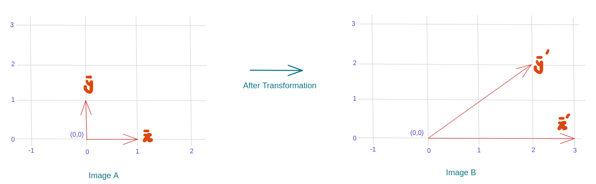

Eigen Values and Eigen Vectors
Most vectors after transformation will get knocked out from their initial span. However, some vectors will remain on the same span but might be scaled by a scalar '\lambda'. These vectors are known as eigen vectors and the scalar which scales these vectors are known as eigen values. To understand this let's take a matrix which shears parallel to the x-axis in the vector space. The transformation matrix for this is given below,
We apply this transformation to the standard coordinate system's basis vectors which are,
The transformation matrix \large A when applied to \large \bar{x} and \large \bar{y} yields \large \bar{x}' and \large \bar{y}'. As shown below,
If we plot \large \bar{x}' and \large \bar{y}' on a grid we can clearly see \large \bar{x}' still lies on the same span as \large \bar{x} whereas the vector \large \bar{y} span has changed after transformation. This can be visually seen below.

The vector \large \bar{x}' in image B is nothing but \large 3 \bar{x} where \large 3 represents the eigen value and \large \bar{x} is an eigen vector. Basically, any vector in the same direction as \large \bar{x} is an eigen vector which can be mathematically represented by \large \lambda \bar{x}. In general, we can write the eigen value equation or eigenequation as,
Where \large \lambda is known as eigen value or characterisitc value associated with vector \large \bar{x} and \large A is the transformation matrix. Next we, will look at how to calculate the eigen vectors and eigen values given an transformation matrix.
How to calculate eigen values and eigen vectors?
We can calculate eigen values and eigen vectors for square matrixes only, for non-square matrix we calculate singlular values. We won't be covering about singular values in this tutorial. So, let's take the eigenequation from which we will first calculate eigen values then the eigen vectors. We derive for a 2D space but the same intution can be extended to \large n dimensional space.
From the above equation we see that either \large \overrightarrow{v} or \large (A - \lambda I) should be the zero vector. We don't want \large \overrightarrow{v} to be zero because then it doesn't give any information so basically we would like \large (A - \lambda I) to equal zero vector. Speaking geometerically we can say that it squishes the space to a point (the zero vector) hence the area (becuse it's 2D it's area for n-dimensional it would have been volume) is zero. One way to think about deteminants is that it tells us how much the transformation will scale the intital space. Hence, using determinants we can rewrite the above equation as,
After solving the above equation and obtaining the values of \large \lambda we substitue the \large \lambda values in the equation \large (A - \lambda I) and solve for \large \overrightarrow{v}. Thus obtaining both eigen values and eigen vectors for the matrix \large A.
Final thoughts
Not all square matrixes have eigen vectors, one such example will be rotating a vector space by 90 degree clockwise in 2D. Here, all the vectors in the space will be knocked out of their span after the transformation. In contrast, for a transformation matrix which just scales the space, all the vectors in the vector space is a eigen vector. I hope by end of this tutorial you were able to get a geometerical understanding of eigen values and eigen vectors and how to compute them.